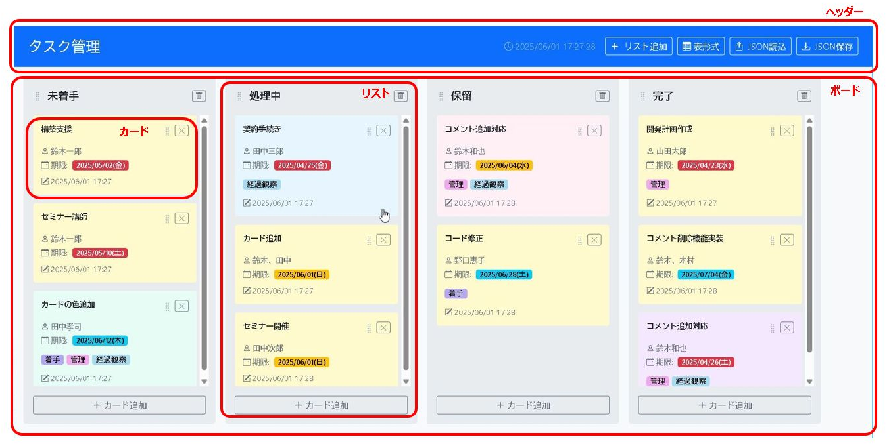

📋 カンバンボード (Kanban Board) 機能UP!
タスクをカードとして視覚化し、「To Do」「進行中」「完了」などのリスト間をドラッグ＆ドロップで移動させて進捗を管理するツールです。新たに表形式表示と更新日時ソート機能が加わり、より柔軟なタスク管理が可能になりました！
主な特徴
- ドラッグ＆ドロップ: カードやリストを直感的に移動・並べ替えできます (カンバン表示時)。
- タスク詳細編集: モーダルウィンドウでタイトル、詳細、担当者、期限日などを編集できます。
- ラベル機能: タスクに複数のラベルを付け、色分けして分類できます。
- チェックリスト: タスク内にサブタスクリストを作成し、完了状況を管理できます。
- コメント機能: タスクに関するメモや議論を時系列で記録できます。
- カードの色分け: カードごとに背景色を設定できます。
- ボードタイトル編集: ボード全体のタイトルを編集できます。
- データ保存/読込: ボード全体の状態をJSONファイルとして保存・読み込みできます。
- NEW!表形式表示: タスクを一覧性の高い表形式で表示・確認できます。
- NEW!更新日時表示とソート: 表形式で各カードの最終更新日時を表示。タスク名、期限日、更新日時などでタスクをソートできます。
使い方マニュアル
画面構成
カンバンボードは、用途に合わせて「カンバン表示」と「表形式表示」を切り替えることができます。
カンバン表示
- ヘッダー:
- ボードタイトル: クリックで編集可能です。
- リスト追加ボタン: 新しいリスト（列）を作成します。
- 表形式ボタン: 表形式示形式に切り替えます。
- JSON保存ボタン / JSON読込ボタン: ボードデータの保存と読込を行います。
- ボードエリア: 複数のリストで構成され、左右にスクロール可能です。
- リスト: 「To Do」「進行中」などのタスクステータスを表す列です。
- リストヘッダー: リスト名（編集可）、リスト移動ハンドル、リスト削除ボタンがあります。
- カード追加ボタン: リストの末尾にあり、新規カード作成モーダルを開きます。
- カード: 個々のタスクです。クリックで詳細モーダルが開きます。移動ハンドル、削除ボタンがあります。
表形式表示
- ヘッダー: カンバン表示時と同様です。カンバンボタンでカンバン表示に戻せます。
- タスクテーブルエリア:
- テーブルヘッダー: 「タスク名」「リスト」「担当者」「期限日」「進捗」「更新日時」などの列名が表示されます。各ヘッダーをクリックすると、その列のデータでタスクを昇順/降順にソートできます。
- タスク行: 各タスクの情報が1行で表示されます。行をクリックすると、タスク詳細モーダルが開きます。
- カード追加ボタン: ヘッダ部に「カード追加」ボタンがあり、クリックすると新規カード作成モーダルが開きます。
基本的な使い方
- NEW表示形式の切り替え: ヘッダーにある カンバンボタンをクリックすることで、元のカンバン表示に切り替えることができます。
- NEW表形式でのタスクソート: 表形式表示の際、テーブルの各列ヘッダー（「タスク名」「担当者」「期限日」「更新日時」など）をクリックすると、その列のデータに基づいてタスクが昇順にソートされます。もう一度クリックすると降順にソートされます。これにより、例えば「更新日時」でソートすれば、直近で作業したタスクや変更があったタスクを簡単に見つけることができます。
- リストの追加 (カンバン表示時): ヘッダーの リスト追加ボタンをクリックします。
- リスト名の編集 (カンバン表示時): リストヘッダーのリスト名部分をクリックして編集します。
- リストの移動 (カンバン表示時): リストヘッダーの移動ハンドルをドラッグ＆ドロップします。
- リストの削除 (カンバン表示時): リストヘッダーの削除ボタンをクリックします（中のカードも削除されます）。
- カードの追加:
- カンバン表示時: 各リストの下部にある カード追加ボタンをクリックします。
- 表形式表示時: ヘッダ部のカード追加ボタンをクリックします。
- カードの移動 (カンバン表示時): カードの移動ハンドルをドラッグし、同じリスト内または別のリストにドロップします。
- カードの削除 (カンバン表示時): カード右上の削除ボタンをクリックします。詳細モーダル内からも削除可能です。
- カード詳細の表示・編集:
- カンバン表示時: カード本体をクリックします。
- 表形式表示時: タスク行をクリックします。
タスク詳細モーダル
- 基本情報: タイトル、詳細、担当者、期限日、ステータス（所属リスト）、カード色を編集できます。モーダル下部には最終更新日時が表示されます。
- ラベル:
- 既存のラベルが表示されます。編集モードで×をクリックして削除できます。
- 編集モードで入力欄に新しいラベル名を入力し+ボタンかEnterで追加できます。既存のラベルを選択して追加することも可能です。
- ラベルの色はラベル名に基づいて自動で設定されます。
- チェックリスト:
- 編集モードでチェックリスト追加ボタンで新しいリストを作成できます。
- 各リストのタイトルや項目は編集モードで編集できます。
- 項目のチェックボックスは表示モードでもクリックでき、変更は即時保存されます。
- 編集モードでリストや項目を削除できます。
- コメント:
- 過去のコメントが時系列で表示されます。
- 新しいコメントを入力しコメント追加ボタンで追加できます（即時保存）。
- 既存のコメントは表示モードでボタンで編集、ボタンで削除できます（即時保存）。
- カードのコピー: 表示モードでコピーボタンをクリックすると、現在のカード内容を複製した新しいカードが同じリストに追加されます。
データの保存と読込
- 保存: ヘッダー右側の JSON保存ボタンをクリックします。変更がある場合、ボタンは黄色!で強調表示されます。
KBD[日付時刻].jsonというファイル名でダウンロードされます。 - 読込: ヘッダー右側の JSON読込ボタンをクリックし、保存したJSONファイルを選択します。現在のボード内容は上書きされます。読み込んだ日時はボタンの隣に表示されます。